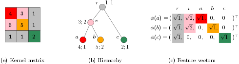
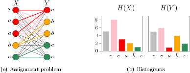
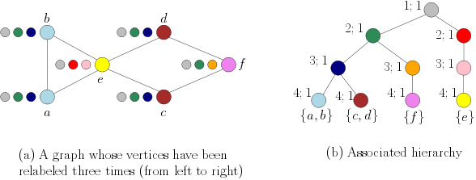

Weisfeiler-Lehman Optimal Assignment#
The Weisfeiler-Lehman optimal assignment kernel capitalizes on the theory of valid assignment kernels to improve the performance of the Weisfeiler-Lehman subtree kernel [KGW16]. Before we delve into the details of the kernel, it is necessary to introduce the theory of valid optimal assignment kernels.
Definition: Valid Assignment Kernels#
Let \(\mathcal{X}\) be a set, and \([\mathcal{X}]^n\) denote the set of all \(n\)-element subsets of \(\mathcal{X}\). Let also \(X,X' \in [\mathcal{X}]^n\) for \(n \in \mathbb{N}\), and \(\mathfrak{B}(X,X')\) denote the set of all bijections between \(X\) and \(X'\). The optimal assignment kernel on \([\mathcal{X}]^n\) is defined as
where \(k\) is a kernel between the elements of \(X\) and \(X'\). Kriege et al. showed that the above function \(K_\mathfrak{B}(\mathcal{X},\mathcal{X}')\) is a valid kernel only if the base kernel \(k\) is strong. Strong kernels are equivalent to kernels obtained from a hierarchy defined on set \(\mathcal{X}\). More specifically, let \(T\) be a rooted tree such that the leaves of \(T\) are the elements of \(\mathcal{X}\). Let \(V(T)\) be the set of vertices of \(T\). Each inner vertex \(v\) in \(T\) corresponds to a subset of \(\mathcal{X}\) comprising all leaves of the subtree rooted at \(v\). Let \(w : V(T) \rightarrow \mathbb{R}_{\geq 0}\) be a weight function such that \(w(v) \geq w(p(v))\) for all \(v\) in \(T\) where \(p(v)\) is the parent of vertex \(v\). Then, the tuple \((T,w)\) defines a hierarchy. Let \(LCA(u,v)\) be the lowest common ancestor of vertices \(u\) and \(v\), that is, the unique vertex with maximum depth that is an ancestor of both \(u\) and \(v\). Let \(H = (T,w)\) be a hierarchy on \(\mathcal{X}\), then the function defined as \(k(x,y) = w(LCA(x,y))\) for all \(x,y\) in \(\mathcal{X}\) is the kernel on \(\mathcal{X}\) induced by \(H\). Interestingly, strong kernels are equivalent to kernels obtained from a hierarchical partition of the domain of the kernel. Hence, by constructing a hierarchy on \(\mathcal{X}\), we can derive a strong kernel \(k\) and ensure that the emerging assignment function is a valid kernel.
Based on the property that every strong kernel is induced by a hierarchy, we can derive explicit feature maps for strong kernels. Let \(\omega : V(T) \rightarrow \mathbb{R}_{\geq 0}\) be an additive weight function defined as \(\omega(v) = w(v) - w(p(v))\) and \(\omega(r) = w(r)\) for the root \(r\). Note that the property of a hierarchy assures that the values of the \(\omega\) function are nonnegative. For \(v \in V(T)\), let \(P(v) \subseteq V(T)\) denote the vertices on the path from \(v\) to the root \(r\). The strong kernel \(k\) induced by the hierarchy \(H\) can be defined using the mapping \(\phi : \mathcal{X} \rightarrow \mathbb{R}^n\), where \(n = |V(T)|\) and the components indexed by \(v \in V(T)\) are
The Figure below shows an example of a strong kernel, an associated hierarchy and the derived feature vectors.

The matrix of a strong kernel on objects \(a,b\) and \(c\) (a) induced by the hierarchy (b) and the derived feature vectors (c). A vertex \(v\) in (b) is annotated by its weights \(w(v);\omega(v)\).#
Let \(H = (T,w)\) be a hierarchy on \(\mathcal{X}\). As mentioned above, the hierarchy \(H\) induces a strong kernel \(k\). Since \(k\) is strong, the function \(K_\mathfrak{B}^k\) is a valid kernel. The kernel \(K_\mathfrak{B}^k\) can be computed in linear time in the number of vertices \(n\) of the tree \(T\) using the histogram intersection kernel as follows
which is known to be a valid kernel on \(\mathbb{R}^n\) [BOV03]. Hence, the complexity of the proposed kernel depends on the size of the tree \(T\). The following Figure illustrates the relation between the optimal assignment kernel employing a strong base kernel and the histogram intersection kernel.

An assignment instance (a) for \(X,Y \in [\mathcal{X}]^5\) and the derived histograms (b). The set \(X\) contains three distinct vertices labeled \(a\) and the set \(Y\) two distinct vertices labeled \(b\) and \(c\). Taking the multiplicities into account the histograms are obtained from the hierarchy of the base kernel \(k\) depicted in the previous Figure. The optimal assignment yields a value of \(K_\mathfrak{B}^k(X, Y)\) \(= \sum_{i=1}^n \min\big(H_{X}(i),H_{Y}(i)\big)\) \(= \min\{5,5\}\) \(+ \min\{8,6\}\) \(+ \min\{3,1\}\) \(+ \min\{2,4\}\) \(+ \min\{1s,2\}=15\).#
Definition: Weisfeiler-Lehman Optimal Assignment#
We next present the Weisfeiler-Lehman optimal assignment kernel. Let \(G=(V,E)\) and \(G'=(V',E')\) be two graphs. The Weisfeiler-Lehman optimal assignment kernel is defined as
where \(k\) is the following base kernel
where \(\tau_i(v)\) is the label of node \(v\) at the end of the \(i^{th}\) iteration of the Weisfeiler-Lehman relabeling procedure.
The base kernel value reflects to what extent two vertices \(v\) and \(v'\) have a similar neighborhood. It can be shown that the colour refinement process of the Weisfeiler-Lehman algorithm defines a hierarchy on the set of all vertices of the input graphs. Specifically, the sequence \((\tau_i)_{0\leq i \leq h}\) gives rise to a family of nested subsets, which can naturally be represented by a hierarchy \((T,w)\). When assuming \(\omega(v) = 1\) for all vertices \(v \in V(T)\), the hierarchy induces the kernel defined above. Such a hierarchy for a graph on six vertices is illustrated in the following Figure.

A graph \(G\) with uniform initial labels \(\tau_0\) and refined labels \(\tau_i\) for \(i \in \{1,\ldots,3\}\) (a), and the associated hierarchy (b).#
The above kernel is implemented below
|
Compute the Weisfeiler Lehman Optimal Assignment Kernel. |
Bibliography#
Annalisa Barla, Francesca Odone, and Alessandro Verri. Histogram intersection kernel for image classification. In Proceedings of the 2003 International Conference on Image Processing, 513–516. 2003.
Nils M Kriege, Pierre-Louis Giscard, and Richard Wilson. On Valid Optimal Assignment Kernels and Applications to Graph Classification. In Advances in Neural Information Processing Systems, 1623–1631. 2016.